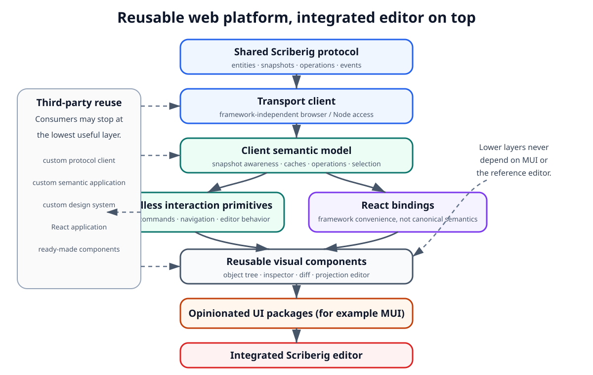
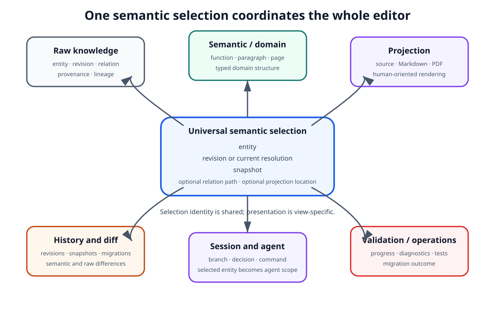
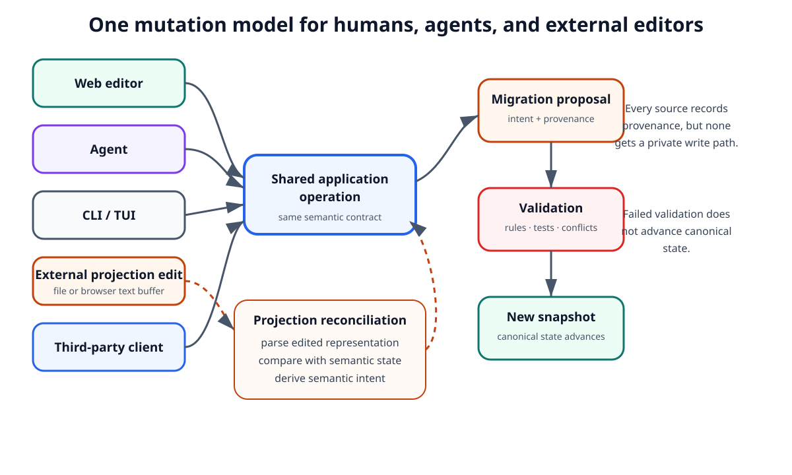
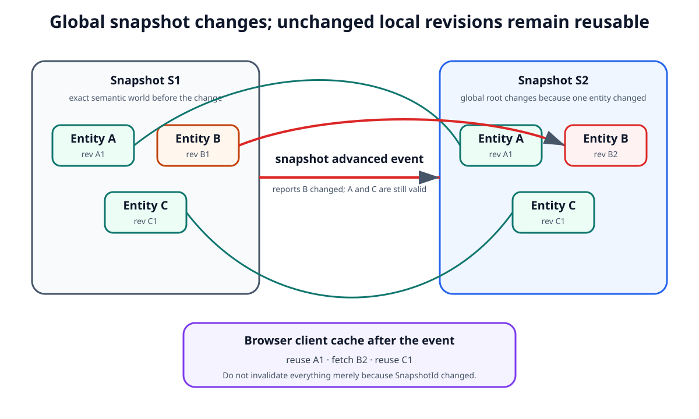
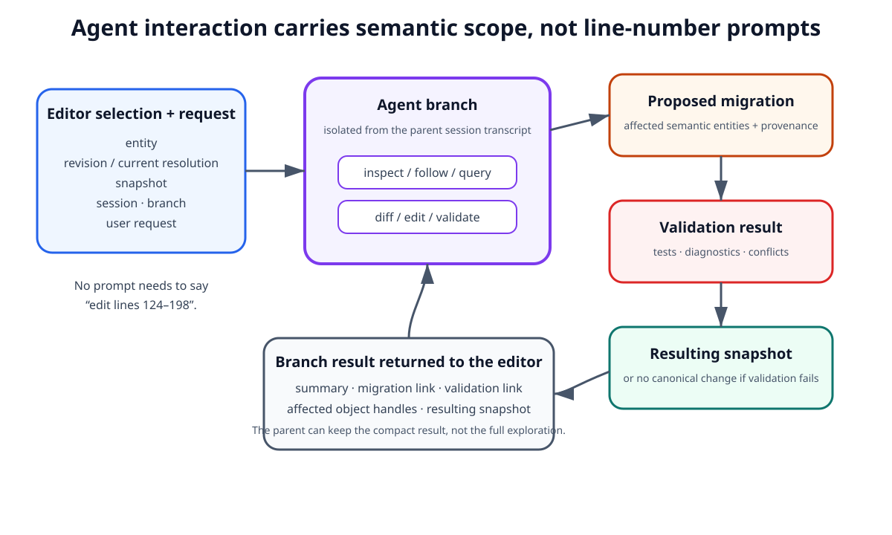
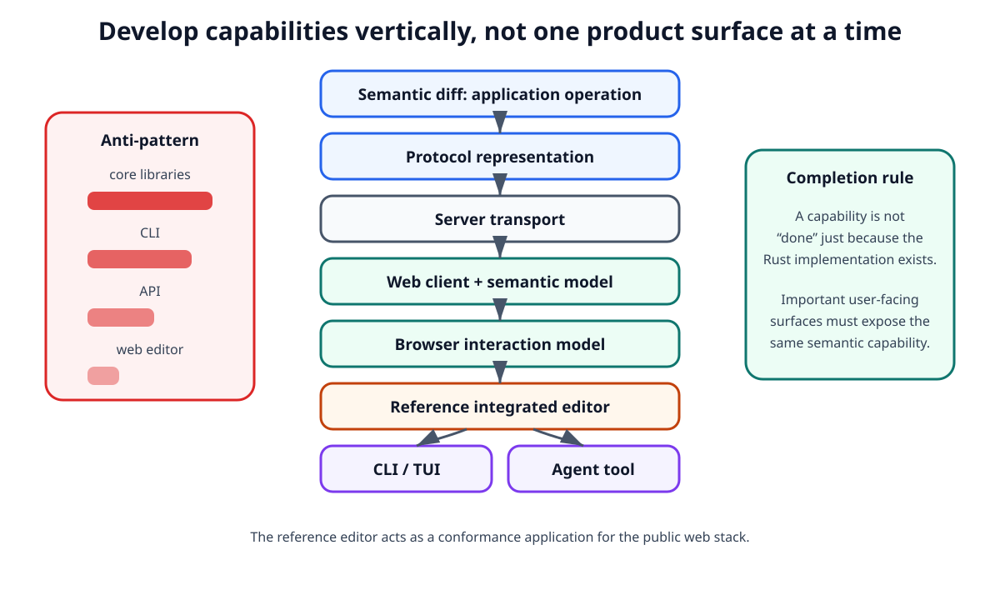

Web Platform and Integrated Editor¶
1. Purpose¶
Scriberig's web capabilities are not a presentation layer added after the storage, CLI, server, and agent runtime are complete.
They are a first-class product surface over the same semantic system.
The web platform must evolve together with:
- the universal knowledge model;
- queries and migrations;
- projections and reconciliation;
- sessions and branches;
- the CLI;
- the TUI;
- the API server;
- the agent runtime.
The browser should be able to expose both the lowest useful level of the system and the highest-level workflows built on top of it.
A user should be able to inspect the raw semantic graph, inspect a typed domain object, open a human projection, review history, compare revisions, issue an agent command, and observe the resulting migration without moving between unrelated products.
At the same time, the full Scriberig editor must not become the only way to build such an interface.
The web architecture must provide reusable libraries from which third parties can build their own applications, appearance systems, editors, dashboards, and domain-specific tools.
The central rule is:
The integrated Scriberig editor is a consumer of the public web platform, not a privileged frontend with private capabilities.
Concrete package names, React hook signatures, component props, route structures, CSS conventions, state-library choices, build tooling, and server endpoints belong in lower-level designs.
2. The Web Platform Is a Product Platform¶
Scriberig has two distinct but related web deliverables.
The first is a reusable web platform.
The second is the complete Scriberig editor built on that platform.
Conceptually:
Shared Scriberig Protocol
|
v
Web Client
|
v
Client Semantic Model
|
+-------------+--------------+
| | |
v v v
Headless React Other
interaction bindings consumers
primitives | |
| | |
+------------+--------------+
|
Reusable UI layers
/ \
/ \
v v
neutral components opinionated UI
integration
|
v
Full Scriberig Editor

Figure 1 — Reusable web platform layers and the integrated editor.
The important distinction is dependency direction: reusable protocol, client, semantic-model, and interaction layers remain independent of the reference editor and of MUI, while third parties can adopt only the lowest layer they need. The integrated editor sits at the top as a consumer and conformance test of those public layers.
The full editor is therefore evidence that the public web platform is complete enough to build a serious application.
If the full editor requires private protocol calls, internal server knowledge, direct database access, or components unavailable to third parties, the public web boundary is incomplete.
3. Relationship to the Shared Runtime¶
The web platform does not define a second semantic model.
Concepts such as:
- entities;
- revisions;
- snapshots;
- relations;
- collections;
- descriptions;
- migrations;
- branches;
- operations;
- validation results;
- projections;
- sessions;
must mean the same thing in the browser as they do in the Rust libraries, CLI, API server, and agent runtime.
The browser receives these concepts through the public protocol defined by the runtime architecture.
The web platform may maintain local caches, navigation state, selections, open views, drafts, and optimistic interaction state, but it must not invent competing canonical semantics.
This gives the browser a clear relationship to canonical state:
canonical semantic state
|
v
application operations
|
v
protocol/events
|
v
web platform
|
v
user interaction
Writes travel in the opposite direction through shared operations rather than through client-specific database mutations.
4. Layered Web Architecture¶
The reusable web platform should be divided into layers with progressively stronger assumptions.
A consumer must be able to stop at the lowest layer that meets its needs.
4.1 Protocol types¶
The lowest web layer represents the public wire model.
It contains the browser/TypeScript representation of concepts defined by the shared protocol.
It must not depend on React, MUI, or the integrated editor.
Its purpose is compatibility and type-safe communication.
The browser representation must follow the same canonical protocol definition used by other clients rather than being independently redesigned.
4.2 Transport client¶
Above the protocol sits a transport-aware client.
It provides access to shared application capabilities such as:
- inspect;
- list;
- follow;
- query;
- diff;
- history;
- branch;
- migrate;
- validate;
- render;
- session operations;
- agent operations;
- event subscriptions.
This layer should remain usable from browser code, Node-based tools, tests, and applications that do not use React.
4.3 Client semantic model¶
The client semantic model provides browser-side coordination around the protocol.
It may manage concerns such as:
- cached entity and revision data;
- snapshot awareness;
- operation state;
- subscription updates;
- loaded relation pages;
- selection state;
- navigation state;
- pending migration previews;
- opened branches;
- editor state associated with projections.
This layer must preserve the distinction between canonical server state and local UI state.
4.4 Framework bindings¶
Framework bindings make the client model convenient to consume from a specific UI framework.
React is a primary supported binding.
React-specific concerns belong here rather than in the transport client or universal model.
Examples include concepts equivalent to:
- subscribing a component to an entity;
- observing a snapshot;
- loading relation children;
- observing an operation;
- observing a session branch;
- resolving current selection.
The existence of React bindings must not prevent non-React applications from using the lower layers.
4.5 Headless interaction and editor primitives¶
Scriberig should provide reusable behavior without forcing appearance.
Headless primitives should own interaction logic such as:
- expandable knowledge trees;
- semantic navigation;
- selection;
- history navigation;
- branch navigation;
- command discovery;
- diff navigation;
- editor coordination;
- migration review;
- operation progress;
- projection synchronization.
They should expose state and actions while leaving rendering decisions to the consuming application.
This is the main extension point for applications with their own visual systems.
4.6 Reusable visual components¶
A reusable component layer may provide ready-made views for common Scriberig concepts while remaining relatively neutral in appearance.
Examples include:
- object trees;
- relation browsers;
- object inspectors;
- history views;
- semantic diffs;
- migration previews;
- session trees;
- branch views;
- validation results;
- agent operation views;
- projection editors.
These components should be composable and replaceable.
4.7 Opinionated component systems¶
Scriberig should also support opinionated component packages built on the reusable layers.
A Material UI integration is an expected example.
It may provide a cohesive application-ready interpretation of the same interaction primitives using MUI conventions, themes, layout systems, controls, dialogs, menus, and data displays.
The existence of the MUI layer must not make MUI a dependency of the lower web platform.
A third party should be able to build an equivalent package using another component system without reimplementing Scriberig's data model or interaction logic.
5. The Integrated Editor¶
The full Scriberig editor is a separate application built from the public web libraries.
Its purpose is to combine the system's low-level and high-level capabilities in one workspace.
It should support workflows such as:
inspect raw graph
-> select semantic object
-> inspect domain representation
-> open rendered projection
-> inspect history
-> ask agent about the object
-> review proposed migration
-> validate
-> accept new snapshot
The full editor is not merely a source-code editor and not merely a chat interface.
It is a workbench for the knowledge system.
The application should make it possible to move continuously between:
- storage-oriented views;
- semantic/domain views;
- human projections;
- historical views;
- agent interactions;
- validation and operation views.
6. One Universal Selection Model¶
Selection should be shared across the integrated editor.
A user should not independently select "line 82 in the code editor," "row 19 in the graph browser," and "the function mentioned in the agent panel" when all three represent the same semantic object.
The conceptual selection identifies semantic context such as:
entity
revision or current resolution
snapshot
optional relation or path context
optional projection location
The exact representation belongs in lower-level designs.
The invariant is that different views can resolve their own representation from the same semantic selection.
For example, selecting a function in a source projection may cause:
- the semantic inspector to show the function;
- the raw graph browser to reveal the entity;
- the history view to show its revisions;
- the relation browser to show callers and dependencies;
- the agent panel to use the function as structured scope;
- the migration panel to highlight changes affecting it.
Similarly, selecting a Markdown paragraph, PDF table, session branch, decision, or migration should work through the same concept.
This shared selection model is one of the primary mechanisms that makes the integrated editor feel like one system rather than several tools placed beside one another.

Figure 2 — The integrated editor is coordinated by one semantic selection.
The reader should notice that each panel is a different representation of the same selected semantic context. Selection identity is shared even though each view chooses its own rendering, which is what allows a source editor, raw graph browser, history panel, and agent panel to remain synchronized.
7. One Universal Command Model¶
Commands should also be shared.
Many actions are meaningful across multiple views:
- inspect;
- open;
- follow relation;
- show history;
- compare;
- render;
- copy semantic reference;
- start branch;
- ask agent;
- validate;
- review migration.
Domain adapters may contribute additional commands.
For example, a code function may support:
- find callers;
- find references;
- rename;
- extract behavior;
while a document section may support:
- insert paragraph;
- move section;
- change heading;
and a session branch may support:
- resume;
- summarize;
- compare;
- promote a decision.
The web UI should discover commands from the same semantic and capability model rather than hard-coding unrelated command lists into each panel.
A command palette, contextual menu, keyboard shortcut, toolbar, or agent tool may expose the same underlying operation through different interaction forms.
8. Required Editor Views¶
The full editor should eventually expose several complementary views over the same knowledge state.
These are conceptual surfaces rather than fixed panel layouts.
8.1 Raw knowledge view¶
The raw knowledge view exposes the universal substrate.
It should allow advanced users and developers to inspect concepts such as:
- entities;
- revisions;
- properties;
- typed relations;
- collections;
- provenance;
- descriptions;
- snapshot resolution;
- reverse references;
- migration lineage.
This view is important for debugging, adapter development, database-only use cases, and understanding how higher-level representations map to the store.
It should remain a supported product capability rather than a hidden developer-only screen.
8.2 Semantic/domain view¶
The semantic view presents knowledge through domain concepts.
Examples include:
Code
module
type
function
code group
statement
Markdown
document
section
paragraph
list
table
PDF
document
page
paragraph
table
figure
Session
session
branch
episode
turn
result
Domain adapters determine which relations and descriptions are meaningful.
8.3 Projection view¶
Projection views present human-oriented external representations.
Examples include:
- source code;
- Markdown;
- rendered document content;
- PDF pages;
- transcripts;
- generated configuration;
- future domain-specific renderings.
A projection view should remain connected to semantic identity.
Human selection and edits inside the projection should map back to semantic objects when the adapter can establish that mapping.
8.4 History and difference view¶
History is a first-class part of the editor.
Users should be able to inspect:
- entity lineage;
- revision history;
- snapshot history;
- migration provenance;
- branches;
- common ancestors;
- semantic differences;
- raw projection differences when useful.
The editor should prefer semantic differences where available while retaining access to lower-level representations.
8.5 Session and agent view¶
Sessions and agent branches are semantic objects, not an unrelated chat subsystem.
The editor should expose:
- session goals;
- current branch;
- child branches;
- branch descriptions;
- branch outcomes;
- tool activity;
- decisions;
- open tasks;
- resulting migrations;
- links to affected knowledge objects.
The chat-like projection is one useful representation, but it is not the only one.
8.6 Validation and operation view¶
Long-running operations and validation results should be inspectable independently of the panel that initiated them.
Examples include:
- imports;
- reconciliation;
- rendering;
- analysis;
- validation;
- test runs;
- agent work;
- migration application.
This gives users a consistent way to understand what the system is doing and what produced a particular result.
9. Editing Must Use the Shared Change Model¶
The web editor must not receive a privileged mutation path.
A browser operation must not directly rewrite canonical database rows merely because the user is interacting through the official editor.
Instead, web edits converge with other write sources:
web edit -----------\
agent edit ----------\
CLI edit -------------+--> proposed semantic change
external file edit ---/ |
third-party client ---/ v
migration
|
v
validation
|
v
snapshot

Figure 3 — All mutation sources use the same semantic change path.
The key architectural point is that the official browser is not privileged: every source may contribute provenance and richer intent, but all canonical changes still pass through shared application operations, migration construction, and validation. Projection edits additionally pass through parsing and reconciliation rather than making edited text canonical by itself.
This ensures that:
- provenance remains meaningful;
- validation is consistent;
- history is complete;
- merge behavior is shared;
- agent and human edits are comparable;
- third-party applications are not second-class citizens.
A web editor may provide optimistic interaction and rich draft behavior, but canonical state changes through the same migration machinery used elsewhere.
10. Projection Editing Is Semantic Editing¶
When a user edits a rendered projection in the browser, the system should not treat the browser text buffer as the new canonical truth.
The projection architecture still applies.
Conceptually:
semantic state
|
v
browser projection
|
v
user edit
|
v
candidate representation
|
v
reconciliation
|
v
semantic migration
Where possible, the browser can provide stronger semantic intent than a generic external text editor.
For example, a structured editor may know that the user renamed a heading, moved a section, changed a function name, or inserted a table row.
That intent may be supplied directly to the shared operation model rather than reconstructed later from text.
However, the resulting semantic change must remain equivalent to changes that could originate from another product surface.
11. Snapshot Awareness¶
Every meaningful browser view is interpreted relative to a semantic state.
The web platform must therefore be snapshot-aware.
A view should be able to distinguish at least these situations:
showing current snapshot
showing historical snapshot
showing branch snapshot
showing candidate migration result
current canonical state changed since view opened
The browser must not silently combine data from incompatible snapshots and present it as one coherent state.
When live state advances, the client may refresh incrementally, preserve a historical view, or show that the current view is stale depending on the workflow.
The exact synchronization mechanism belongs in lower-level designs.
The architectural invariant is:
A user should be able to know which semantic state a view represents.
12. Events and Incremental Updates¶
The web platform should consume the shared event model rather than relying exclusively on full reloads or polling.
Events may communicate facts such as:
- snapshot advanced;
- entity revision changed;
- projection changed;
- branch updated;
- migration completed;
- validation completed;
- operation progressed;
- agent emitted output;
- operation failed or was cancelled.
Events identify what changed.
The browser can then use immutable identities and cached revisions to retain unchanged information.
This mirrors the rest of Scriberig's incremental architecture: a global snapshot may change while most locally referenced immutable revisions remain reusable.

Figure 4 — Snapshot-aware event handling preserves unchanged client state.
What matters is the separation between global and local identity. A new SnapshotId says that something in canonical state changed, but immutable RevisionId values let the browser prove which locally cached objects remain valid, so incremental updates do not require a full graph reload.
13. Progressive Disclosure in the UI¶
The web editor should follow the same progressive-disclosure principles used for agents.
A knowledge tree should not need to download every descendant before showing its root.
A project view should not need every function body before listing modules.
A session view should not need every completed branch transcript before listing branch outcomes.
A PDF view should not need every extracted object before listing pages and headings.
The UI should be able to move through levels such as:
Counts, descriptions, relation summaries, and stable handles make this possible.
This property matters both for performance and for comprehension.
The browser and the agent are different consumers, but both benefit when the underlying system can answer small semantic questions without materializing the entire world.
14. Agent Interaction Is Contextual, Not Textual¶
The integrated editor should make agent commands operate on structured context.
A user who selects a function and asks:
should not require the UI to manufacture a prompt such as:
Instead, the agent command should carry semantic scope equivalent to:
selected entity
selected revision or current resolution
snapshot
active session
active branch
user request
The agent runtime can then use the universal query and operation model to inspect exactly what it needs.
This allows the same command behavior to survive:
- file moves;
- formatting changes;
- different projections;
- alternative editor layouts;
- historical inspection.
Agent output should likewise link back to semantic objects, migrations, validation results, and branches rather than existing only as plain text.

Figure 5 — Agent interaction is structured, scoped, and traceable back to semantic history.
The figure emphasizes that the editor passes semantic handles rather than manufacturing brittle file-and-line prompts. The agent's exploratory branch may stay compact in the parent session, while its durable outcome remains connected to the exact migration, validation evidence, affected objects, and resulting snapshot.
15. Low-Level and High-Level Operations Must Coexist¶
The integrated editor should not hide the low-level knowledge system in favor of simplified workflows.
Scriberig is intended to support both:
and:
The same application may therefore expose:
- raw database exploration;
- semantic browsing;
- projection editing;
- direct semantic operations;
- migration review;
- agent-assisted workflows.
High-level operations should be explainable in terms of lower-level results.
For example, an agent operation that changes code should eventually expose:
agent branch
-> proposed migration
-> affected semantic entities
-> validation result
-> resulting snapshot
This makes the editor suitable both for ordinary work and for understanding or debugging agent behavior.
16. Third-Party Applications and Visual Systems¶
The reusable web platform exists so Scriberig capabilities can be embedded in applications that do not look like the reference editor.
A third-party application should be able to choose among several levels of reuse.
For example, it may use only:
and create a completely custom interface.
Another may use:
while implementing its own design system.
Another may use:
and customize appearance.
Another may adopt the opinionated MUI layer directly.
This layering prevents reusable behavior from being trapped inside Scriberig-specific visual components.
17. Styling Is Not Interaction Logic¶
Visual styling and semantic/editor behavior should remain separable.
The reusable interaction layer owns behavior such as:
- expansion;
- loading;
- selection;
- navigation;
- command applicability;
- keyboard intent;
- migration state;
- operation progress.
An appearance layer decides how those behaviors are rendered.
This allows multiple component ecosystems to share the same interaction semantics.
The opinionated MUI layer should be allowed to be strongly opinionated about visual composition while remaining a consumer of the same underlying behaviors.
18. Domain-Specific Web Extensions¶
Domain adapters may contribute web-facing capabilities without redefining the application shell.
A domain may provide concepts such as:
- specialized inspectors;
- specialized projections;
- domain commands;
- domain diff renderers;
- relation visualizations;
- editor affordances;
- summaries and icons;
- validation presentations.
For example, a Rust domain adapter may provide source-oriented function and call views, while a PDF adapter may provide page and table views.
The universal editor should host these extensions through stable extension points.
The exact plugin mechanism belongs in lower-level designs.
The invariant is that domain specialization extends the universal navigation and operation model rather than creating independent mini-applications.
19. The Integrated Editor as a Conformance Application¶
The reference editor should deliberately exercise the public platform.
It serves two purposes:
- it is the complete Scriberig user application;
- it verifies that public libraries and protocol capabilities are sufficient to build that application.
This creates a useful architectural test:
If the reference editor can do something only through a private API, that capability is not yet properly exposed by the platform.
The reference editor should therefore avoid:
- direct database connections;
- hidden server endpoints;
- private mutation paths;
- private domain representations;
- client-only reinterpretations of canonical semantics.
Exceptions should be explicit and should normally indicate a missing reusable abstraction.
20. Vertical Capability Development¶
Web functionality must evolve at the same time as other product surfaces.
A common failure mode would be:
core libraries: many capabilities
CLI: most capabilities
API: some capabilities
web editor: a small subset
Scriberig should instead develop user-visible capabilities vertically.
For a capability such as semantic diff, the work is not conceptually complete merely because the Rust library implements it.
The complete capability may require exposure through:
core/application operation
protocol
server
web client
browser interaction model
reference editor
CLI
agent tool where appropriate

Figure 6 — User-visible capabilities should be delivered vertically across product surfaces.
The important observation is that feature completeness is cross-surface rather than backend-only. The reference editor provides a practical test of the public web stack, while CLI, API, and agent exposure should remain aligned with the same semantic operation instead of evolving as independent implementations.
Not every low-level primitive requires a dedicated UI immediately.
But important user-level capabilities should have an intentional path across supported surfaces.
This requirement keeps the web editor, API, CLI, and agent model aligned as the system evolves.
21. Long-Running Operations¶
Many Scriberig activities are not instantaneous.
Examples include:
- agent work;
- validation;
- test execution;
- reconciliation;
- import;
- rendering;
- indexing;
- semantic analysis.
The web platform should use the same universal operation lifecycle as other product surfaces.
Conceptually:
An operation has identity independent of the UI element that started it.
This allows:
- a panel to be closed without losing the operation;
- another view to inspect progress;
- the CLI and browser to observe the same operation;
- results to become durable semantic objects where appropriate.
22. Browser State Is Not Canonical Knowledge¶
The browser needs substantial local state, but local UI state must not be confused with the knowledge graph.
Examples of browser-local state include:
- which tree rows are expanded;
- current panel layout;
- temporary text selection;
- viewport position;
- active tab;
- local filtering;
- unsent command input;
- transient hover state.
Such state should not enter canonical knowledge merely because it exists in the application.
Conversely, durable semantic facts such as:
- accepted decisions;
- session branches;
- migrations;
- descriptions;
- projections;
- validation results that are preserved as project history;
should not exist only in browser state.
The boundary must remain deliberate.
23. Accessibility and Non-Pointer Interaction¶
The integrated editor may become structurally complex, but interaction must not assume a mouse-only workflow.
Reusable interaction primitives should support:
- keyboard navigation;
- command-driven operation;
- programmatic focus movement;
- accessible semantic labeling;
- screen-reader-compatible structure where practical.
This also benefits power users because Scriberig naturally supports command palettes and semantic navigation.
Accessibility behavior belongs in the reusable interaction layers rather than being reconstructed separately by every visual component package.
24. Performance Principles¶
The web platform should take advantage of Scriberig's immutable and incremental architecture.
Important principles include:
- cache by immutable semantic identity where appropriate;
- load relation children incrementally;
- avoid invalidating all client state merely because the global snapshot changed;
- retain unchanged revisions across snapshot transitions;
- render large trees virtually or incrementally where necessary;
- request summaries before full content;
- subscribe to relevant changes instead of constantly reloading everything.
The browser should be able to work with very large knowledge graphs without materializing them in full.
The exact caching algorithms and UI virtualization technologies belong in lower-level designs.
25. Deployment Independence¶
The reusable web platform should not assume one deployment topology.
Possible uses include:
browser -> local Scriberig server
browser -> remote Scriberig server
desktop shell -> embedded/local server
third-party application -> shared server
A full application may be served by the same executable that owns the API, or it may be deployed separately.
Those choices must not alter the semantic contract.
The web platform consumes the public protocol regardless of deployment arrangement.
26. Failure and Staleness Must Be Visible¶
The editor must not conceal uncertainty created by distributed or asynchronous interaction.
The UI should be able to represent situations such as:
- the viewed snapshot is no longer current;
- an entity changed since an edit began;
- a migration conflicts with newer state;
- reconciliation is ambiguous;
- validation failed;
- an operation was cancelled;
- an agent branch completed against an older base;
- the connection to the server was interrupted.
The exact visual treatment is a product concern.
The architectural requirement is that these states are representable by the protocol and client model rather than flattened into generic error strings.
27. Security and Trust Boundaries¶
The browser should operate through capabilities exposed by the server and application layer.
It must not rely on being a trusted official frontend to bypass authorization, provenance, validation, or migration rules.
The integrated editor may expose more capabilities to an authorized user than a restricted third-party application receives, but those differences should arise from explicit permissions and capabilities.
They should not arise because the reference UI has secret write access.
The broader trust, provenance, and validation model is defined separately.
28. Non-Goals¶
This document does not require:
- one fixed panel layout;
- one permanent visual design;
- MUI as a dependency of the web platform;
- React as the only possible consumer of the protocol client;
- the browser to duplicate domain logic already available on the server;
- all semantic objects to have custom visual components;
- every low-level database primitive to have a graphical control;
- the integrated editor to replace external editors;
- projection editing to bypass reconciliation or migrations;
- the web application to become the canonical source of project state.
The architecture intentionally leaves room for multiple editors and product experiences over the same semantic system.
29. Required Invariants¶
Lower-level designs must preserve the following rules.
- The full Scriberig editor is built on reusable public web layers.
- The web platform does not define a second canonical semantic model.
- Protocol and transport layers do not depend on React or MUI.
- Client semantic state is distinct from canonical knowledge state.
- Headless interaction behavior can be reused independently of visual styling.
- React bindings are reusable independently of the reference editor.
- Opinionated MUI components sit above reusable behavior and data layers.
- Third parties can build custom visual systems without reimplementing Scriberig's semantic model.
- Selection is semantic and can be shared across raw, domain, projection, history, and agent views.
- Commands resolve to shared application operations rather than frontend-specific mutations.
- Web edits produce semantic changes through migrations and validation.
- Projection edits remain part of the projection/reconciliation model.
- Agent commands use structured semantic scope rather than line-number-based prompt construction.
- The browser is snapshot-aware.
- Immutable revisions remain reusable across snapshot changes when they have not changed.
- Long-running work has durable operation identity independent of a particular panel.
- Domain-specific UI extends universal navigation and operation concepts.
- Raw knowledge browsing remains a supported capability of the complete editor.
- User-level capabilities should evolve vertically across web, API, CLI, and agent surfaces.
- The reference editor must not depend on private server or database capabilities unavailable to other authorized clients.
30. Questions for Lower-Level Designs¶
The following questions are intentionally deferred to Level 2 and Level 3 designs:
- how protocol types are generated for TypeScript;
- how the web workspace is organized into concrete packages;
- which client cache/state technology is used;
- the exact React binding API;
- the exact headless tree, selection, and command interfaces;
- how neutral components and MUI components are divided;
- how domain UI extensions are registered;
- how source and Markdown projection editors map cursor positions to semantic entities;
- how browser drafts and optimistic edits are represented;
- how event subscriptions resume after reconnect;
- how large trees are virtualized;
- how keyboard navigation and focus management are implemented;
- how the reference editor lays out raw, semantic, projection, history, and agent views;
- how browser builds are served in local, server, and desktop deployments;
- how authentication state and capability discovery are presented to clients;
- how cross-surface conformance tests are automated.
These decisions should be made without violating the Level 1 boundaries above.
31. Summary¶
Scriberig's web architecture consists of a reusable platform and a complete editor built from that platform.
The reusable platform progresses from shared protocol types through transport, client semantic state, framework bindings, headless interaction primitives, reusable components, and optional opinionated component systems such as MUI.
The integrated editor combines low-level database exploration with high-level semantic and agent workflows.
Its core interaction model is semantic rather than file-oriented:
selection
-> semantic object
-> available commands
-> shared application operation
-> migration / query / branch / render
-> updated snapshot and events
A user should be able to move from a raw entity to a domain object, to a human projection, to its history, and to an agent command without losing identity or context.
The full editor is also the primary conformance application for the public web stack. If it needs private capabilities, the reusable platform is incomplete.
The result is not merely a browser interface for Scriberig. It is a reusable web development platform over the same universal knowledge system used by the CLI, server, agents, domain libraries, and external applications.